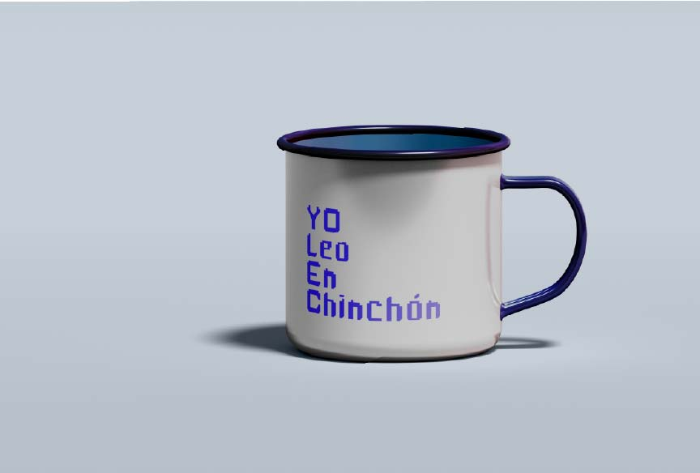

¿Cómo diseñar una tipografía que hable el lenguaje de una generación sin perder el vínculo con el lugar que la inspira?
Typeface design
Bitty is a bitmap typeface designed pixel by pixel, created for the municipal library of Chinchón. The brief called for connecting with a younger audience and conveying a contemporary character to refresh the institution's image ahead of the 2025 Book Fair. The response was a typeface built like video games and early computer screens — evoking a certain digital nostalgia for some, and speaking the visual language of a generation for others. Using Fontstruct as the design tool and taking inspiration from the geometry of the town's towers and local architecture as the base module for each character, it became a way of anchoring the typeface to its territory without sacrificing modernity.


